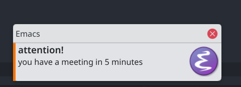

You don't need org-alert, Emacs has it built-in (kinda)
TL;DR: jump to the full config.
I tried using org-alert and org-wild-notifier, but both didn't work very well with me.
org-alert was the one that worked best, but sometimes it didn't notify, or it notified after the schedule, and some other errors.
And then I found out that for what I needed, 20 lines of elisp were enough to replace org-alert.
Meet appt
appt is a tool for warning you about appointments, which by default is based on the Emacs diary, but you can feed it with your org agenda entries, and it will warn you about your schedules and deadlines.
Let's first configure it:
(setq appt-message-warning-time 60) ;; start warning 60 minutes before appointments (setq appt-display-interval 1) ;; display warning every minute (appt-activate t) ;; starts the appt "mode"
And to feed it with your org agenda, do:
;; `t' here means "clear whatever is in appt before adding" (org-agenda-to-appt t)
This will feed once, and won't update if you change the agenda. Later on I will share the full config.
appt itself doesn't show desktop notifications, only a window inside Emacs (which may be enough for you).
Desktop notifications
Emacs has built-in support for sending desktop notifications on Windows and Linux:
(notifications-notify :title "attention!" :body "you have a meeting in 5 minutes" :urgency 'critical)
For Mac, an alternative is to use the function org-show-notification:
(org-show-notification "attention! you have a meeting in 5 minutes")
In KDE it looks like this:

You can check the docs on desktop notifications for more details.
Now here is the cool thing: appt has a variable named
appt-disp-window-function, which by default is set to the function that shows
the window inside Emacs.
So to get desktop notifications about your agenda events, you only need to set it to whatever you prefer:
(setq appt-disp-window-function
(lambda (remaining new-time msg)
(notifications-notify
:title (message "In %s minutes" remaining)
:body msg
:urgency 'critical)))
Updating appt automatically
We want to make sure appt will be always up to date, even if we reschedule or remove appointments. For that, I'll make Emacs update appt list before it check for appointments.
;; before checking appt, run org-agenda-to-appt
(advice-add 'appt-check
:before
(lambda (&rest args)
(org-agenda-to-appt t)))
The full config
(use-package emacs
:config
;; start warning 60 minutes before the appointment
(setq appt-message-warning-time 60)
;; warn me every 5 minutes
(setq appt-display-interval 5)
(if (eq system-type 'darwin)
;; for mac, use org-show-notification, which is more limited
(setq appt-disp-window-function
(lambda (remaining new-time msg)
(org-show-notification msg)))
;; for other systems, use notifications-notify
(setq appt-disp-window-function
(lambda (remaining new-time msg)
(notifications-notify
:title (format "In %s minutes" remaining)
:body msg
:urgency 'critical))))
(advice-add 'appt-check
:before
(lambda (&rest args)
(org-agenda-to-appt t)))
(appt-activate t))
Hope it's useful and feel free to add any suggestions.